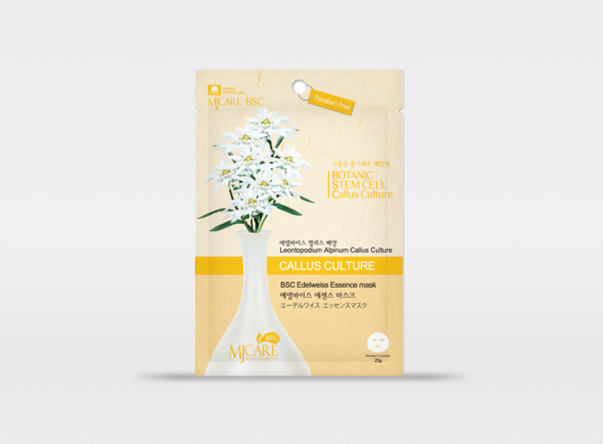

PRODUCT
MASK PACK — PATCH
MJ CARE ESSENCE MASK
Essence mask with rich moisture and nutrition

MJ CARE BSC
EDELWEISS ESSENCE MASK
PROTECTTION OF DRY SKIN
contains edelweiss callus culture ex tract
DETAIL PAGE


Callus culture extract + Shea Butter + Argan Oil
+ Jojoba Oil + EGF + Aloe vera leaf extract
Made of six types of plant stem cell cultures composed of edelweiss, resurrection
plant, lotus, Estern Prickly pear, Angraecum, and rosa damascena flowers, the mask
pack contains useful ingredients for skin and provide smooth and glowing skin.
Moreover, shea butter, EGF, aloe vera leaf extract contained in
the mask pack help skin to stay hydrated and youthful.

MJ CARE BSC
EDELWEISS
ESSENCE MASK
PROTECTION OF DRY SKIN
Contains edelweiss callus culture extract
Rich in protection ingredients that effective
for harsh environment factors, edelweiss
prevents skin damage from dryness and
rouchness and help parched skin.
[INGREDIENT]
WATER, BUTYLENE CLYCOL, GLYCERIN, 1,2-HEXANEDIOL, PROPYLEME GLYCOL, LEONTOPODIUM ALPINUM CALLUS CULTURE
EXTRACT, LEONTOPODIUM ALPINUM EXTRACT, ALOE BARBADENSIS LEAF EXTRACT, PORTYLACA OLERACEA EXTRACT,
CENTELLA ASIATICA EXTRACT, CARBOMER, SIMMONDSIA CHINENSIS (JOJOBA) SEED OIL,
BUTYROSPERMUMPARKII(SHEABUTTER), ARGANIA SPINOSA KERNEL OIL, ALLANTOIN, ARGININE, BETAINE, SODIUM PCA,
SODIUM HYALURONATE, GLYCERYL STEARATE, HAMAMELIS VIRGINIANA (WITCHHAZEL)WATER, CAPTYLYL GLYCOL,
POLYSORBATE60, CAPRYLIC/CAPRIC TRIGLYCERIDE, SH-OLIGOPEPTIDE-1, TOCOPHERYL ACETATE, DISODIUM EDTA,
DIPOTASSIUM GLYCYRRHIZATE, HYDROXYETHYLCELLULOSE, FRACRANCE
HOW TO USE
1.Wash you face and dried with cotton towel and apply face lotion
(Before opening, dab the packaging two-three times with
your palms to mix essence evenly.)
2. Open a package that has one sheet. Place the mask on your face,
adjusting around your eyes first, make sure to spread evenly and
that it adheres tightly to the whole face using your fingers
(Essence on your hands can be applied to your hands, neck,
and other areas that need)
3. Remove the patch 10-15 minutes later.
4. Dab the essence on your skin to help absorption.
No additional cleanse is necessary after removing the pack. For
refreshing feeling all day long, apply basic or color cosmetics on the top.
(Continue use of the product will help you achieve healthier and moisture skin.)
PRECAUTIONS
1. If you experience any discomfort while using our cosmetics, stop using them
immediately and consult with your dermatologists
as continued use may worsen the symptom.
A. Redness, swelling, itching, and irritation
B. In the event of symptoms aforementioned caused by a direct ray of light
2. Refrain from using the product on areas of wound, eczema, and dermatitis.
3. Handling and Precautions
A. Use the product immediately after opening the package as there is concern of spoilage
and refrain from storing it.
B. Keep away from reach of children.
C. The product should be kept away from direct sunlight and avoid exposure to high temperature and humidity
environment.
4. Avoid contact with eye. If the product entered your eyes, wash immediately with clean water.
5. Refrain from using the sheet if you are prone to irritation from a band-aid.